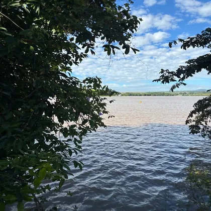
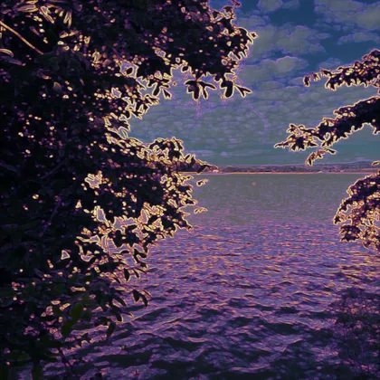
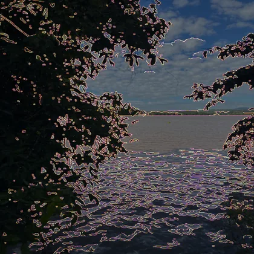
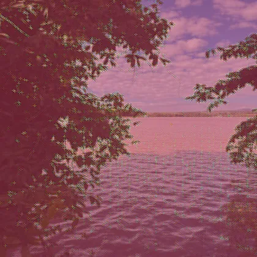
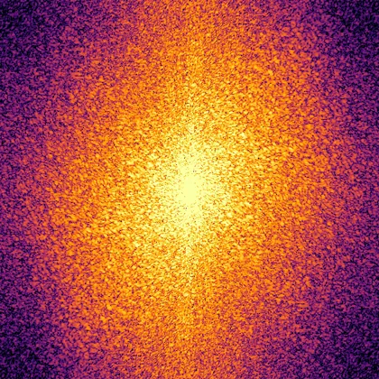
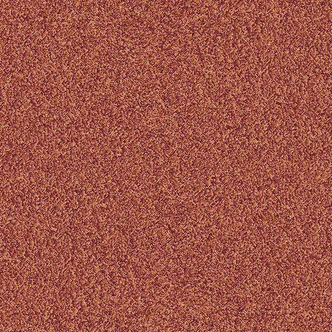
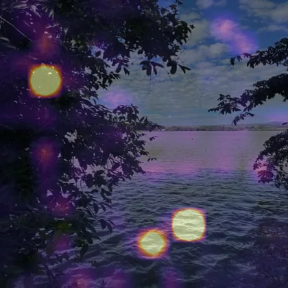

Escolha a imagem para analisar
Selecione uma foto do seu dispositivo. A AIDA processa a imagem e explica, em linguagem simples, os indícios de que ela pode ter sido gerada por IA.
- Escolha a imagem
- Veja o resultado
Selecione sua imagem
Escolha um arquivo do seu celular ou arraste a imagem para cá, se estiver no computador.
Formatos aceitos: JPG, PNG, WEBP, BMP, HEIC e AVIF.
Como funciona Veja os métodos usados na análise
A AIDA não olha só para a foto: ela mede seis sinais diferentes e compara o que cada um encontra. Abaixo, a mesma imagem passada por todos eles.

-

Gradiente Intensidade de variação local. As regiões claras concentram transições abruptas; suavidade demais em áreas texturizadas é um dos indícios medidos. -

Bordas Contornos detectados. Serve para conferir se a análise está reagindo à estrutura da cena e não a um artefato de compressão. -

Ruído residual O que sobra depois de filtrar a imagem. Câmeras deixam ruído de sensor razoavelmente homogêneo; blocos destoantes merecem atenção. -

Espectro — magnitude A imagem vista como frequências, em escala logarítmica. Picos regulares podem vir tanto de geradores quanto de reamostragem e compressão. -

Espectro — fase A outra metade da leitura em frequência, mais estável que a magnitude quando a imagem passa por compressão. -

Atenção do CLIP As regiões que mais pesam na leitura da rede neural. É um mapa de atenção aproximado, não uma localização de manipulação.
Estes mapas mostram onde o sinal medido é mais forte — não onde houve manipulação. Servem para inspeção, não como prova.
A imagem só fica salva na sua conta se você marcar essa opção na próxima etapa. Veja o Aviso de Privacidade.